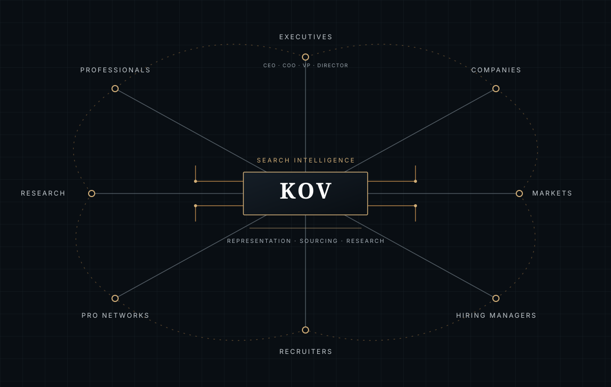

FOR CTOs — PRIVATE CAREER REPRESENTATION
Make your technology leadership legible beyond the stack.
Position the business outcomes, teams and technical decisions behind your career—and target the next mandate with intent.
KOV supports senior professionals with research-led career representation. For a CTO search, the target should reflect both technical leadership and the organizational responsibilities you want to own.

DEFINE THE CTO ROLE
Look beyond the title to the actual remit.
A CTO may lead product engineering, architecture, security, data, platform strategy, technical operations or several functions. The right next role depends on company stage, product model, team scale and the decisions you want to own.
KOV helps turn those preferences into a search brief covering role level, organization type, sector, location and non-negotiable conditions.
- Clarify technology and business responsibilities
- Describe team, platform and operating scale
- Select target company stages and sectors
- Identify relocation and work preferences
TELL THE LEADERSHIP STORY
Connect technical choices to business context.
A strong executive narrative explains why key technical decisions mattered: how you balanced reliability and speed, shaped a platform, developed teams, managed risk or enabled a product strategy.
KOV can help present those examples in language appropriate for executive, board and recruiter conversations. Claims remain grounded in your verified experience.
- Explain architecture and transformation decisions
- Show team leadership and talent development
- Describe business outcomes without exaggeration
- Protect confidential technical details
EXECUTE WITH APPROVAL
Bring research, outreach and preparation together.
Depending on the written scope, candidate representation can include role research, targeted applications, recruiter and hiring-manager outreach, follow-up, interview preparation and offer support.
The process is tailored to the executive and remains subject to approval. KOV does not promise interviews or a role; employers make their own decisions.
- Agree target organizations and exclusions
- Approve applications and messages
- Prepare role-specific leadership examples
- Discuss deliverables and fees privately by message
COMMON QUESTIONS
Before you start a conversation.
Does this service include technical interview coaching?
Preparation can be discussed within the engagement. The scope depends on the role and interview process; it is not a substitute for specialized technical assessment.
Can KOV guarantee a CTO interview?
No. KOV can support a targeted search, but employers control interview invitations and hiring decisions.
START A CONFIDENTIAL CONVERSATION
Start with the technology mandate you want.
Share the environments you have led, target role scope and preferred markets. KOV can discuss whether its candidate-side service fits your objectives.
KOV works remotely across agreed markets; this page does not imply a local office or guaranteed outcome. Engagement scope and fees are discussed directly by message and agreed in writing before work begins.